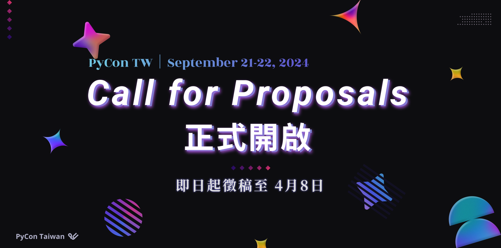

PyCon Taiwan 2024 Call for Proposals is OPEN!
Posted on Wed 28 February 2024 in programs

📢 PyCon TW 2024 Call for Proposals (CFP) is Now Open!
Time flies, and another year has passed! We believe you have accumulated many brilliant ideas that you are eager to share with the community. Now is the time to act: go to the PyCon TW 2024 official website, register your account, prepare your manuscript, and start submitting!
🗓 Important Information:
- Conference Dates: September 21 - 22, 2024
- Conference Venue: National Science and Technology Museum
🔔 Call for Proposals Period:
- Start Date: February 25, 2024
- Deadline: April 8, 2024, 23:59:59 (AoE)
📝 How to Submit:
First, register an account and head to https://reurl.cc/77L2Nl to submit your proposal!
📋 Submission Eligibility:
Submissions related to Python from any professional field (AI, FinTech, ML, DA, etc.) are warmly welcomed. We are eager to learn how Python plays a role in your life or work and look forward to your valuable contributions.
For more detailed information, please visit the CFP page for more insights 👇
https://tw.pycon.org/2024/zh-hant/speaking/cfp
🔻 Previous Topics 🔻
👉 PyCon TW 2023：https://reurl.cc/QearvZ
👉 PyCon APAC 2022：https://reurl.cc/n7VXZD
👉 PyCon TW 2021： https://reurl.cc/RvdDOr

📢 PyCon TW 2024 徵稿 (CFP) 正式開啟 !
時光飛逝，又過了一年！相信您積累了許多想要與社群分享的精彩想法。
現在是時候行動了：前往 PyCon TW 2024 官方網站，註冊帳號，準備稿件，開始投稿吧！
🗓 重要資訊：
- 大會日期： 2024 年 9 月 21 日 - 9 月 22 日
- 大會場地： 國立科學工藝博物館
🔔 徵稿日期：
- 開始日期： 2024 年 2 月 25 日
- 截止日期： 2024 年 4 月 8 日，23:59:59 (AoE)
📝 如何投稿：
首先註冊帳號，前往 https://reurl.cc/77L2Nl，就可以投稿囉！
📋 投稿資格：
只要投稿的內容與 Python 有相關，無論專業領域為何 (AI / FinTech / ML / DA...)，都非常歡迎跟我們分享 Python 如何在您的生活或工作中發揮，並期待您的珍貴貢獻。
若需要更詳細的資訊，歡迎前往 CFP 頁面獲取更多資訊喔 👇
https://tw.pycon.org/2024/zh-hant/speaking/cfp
🔻 近年講題 🔻
👉 PyCon TW 2023：https://reurl.cc/QearvZ
👉 PyCon APAC 2022：https://reurl.cc/n7VXZD
👉 PyCon TW 2021： https://reurl.cc/RvdDOr